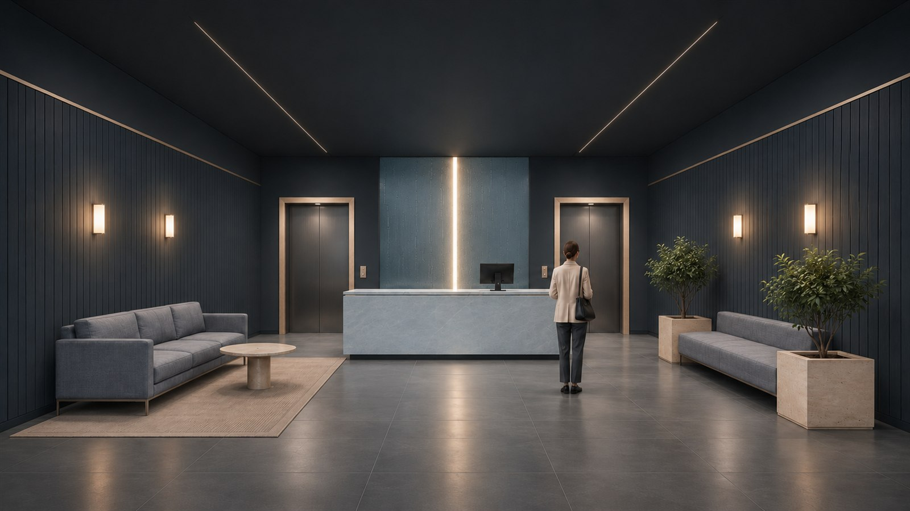
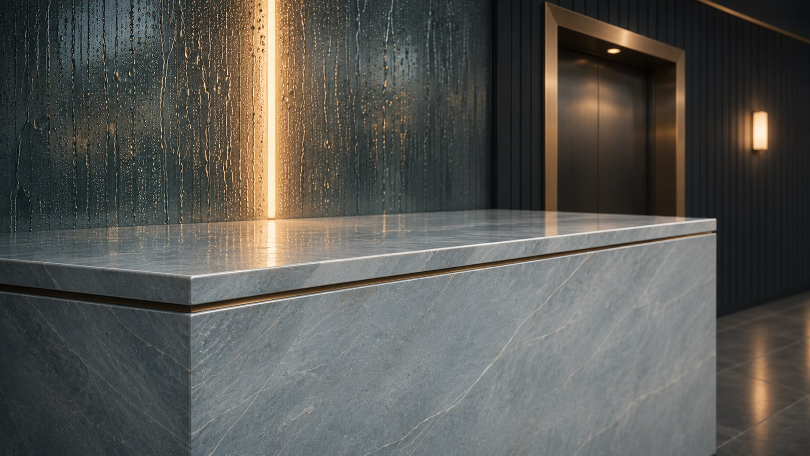
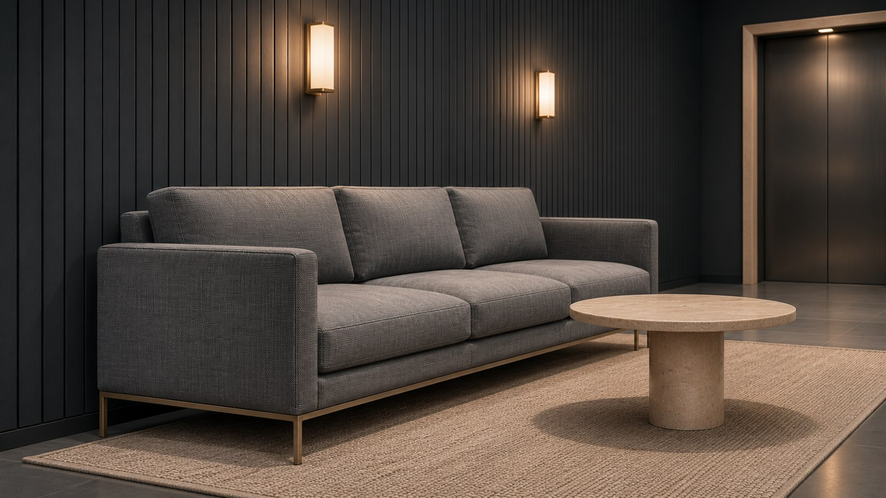
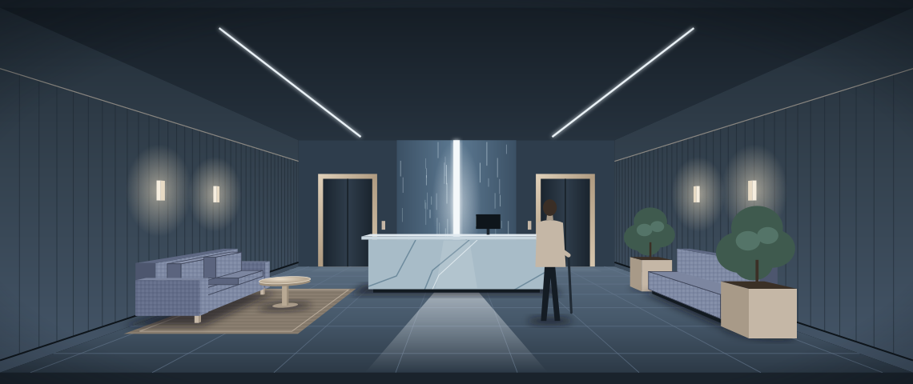

Серо-голубой камень
Крупный формат стойки. Рисунок проверяется на раскладке плит.
Один световой ориентир в глубине. Сухой путь к лифтам. Небольшое место, чтобы подождать своих.

Визуализации сгенерированы ИИ для концепта; это не фотографии реализованного объекта.



Переход с улицы собирает влагу до основной зоны. Решётка снимается для уборки, а примыкание остаётся ровным.
Схема принципиальная. Толщины, нагрузку и отвод влаги рассчитывает проектировщик.
Сиденья не занимают основной маршрут. Коляски и доставка имеют свои места рядом со входом.
Пример — концепт для портфолио. Условная площадь 95 м². Размеры, доступность и эвакуацию проверяют по архитектурному проекту здания.
Скамья смотрит в сторону входа. Локальный свет делает место ожидания заметным, но не превращает его в отдельный зал.
Крупный формат стойки. Рисунок проверяется на раскладке плит.
Съёмные секции обивки в зоне ожидания.
Только там, где к нему прикасаются: ручки, торцы, детали.
Пример — концепт для портфолио. Расчёт на 95 м², без отделочных работ, инженерных разделов и оборудования.
| Раздел | ₽/м² | Сумма |
|---|---|---|
| Планировка | 700 | 66 500 ₽ |
| Концепция | 900 | 85 500 ₽ |
| Чертежи | 1 400 | 133 000 ₽ |
| Спецификации | 500 | 47 500 ₽ |
| Итого | 3 500 | 332 500 ₽ |
Визуализация — отдельно, от 30 000 ₽. Рабочие узлы разрабатываются после обследования основания и согласования инженерии.